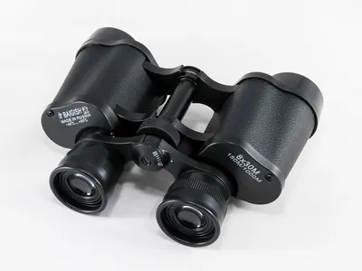
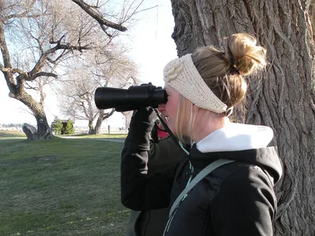
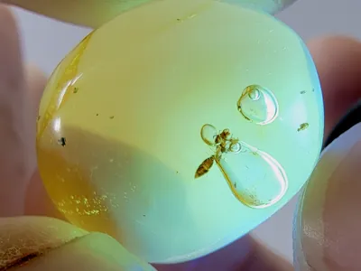
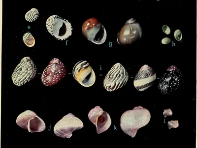
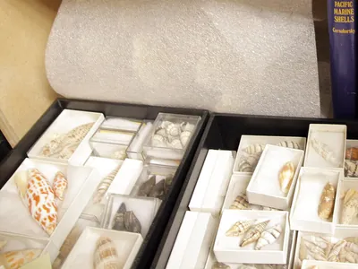
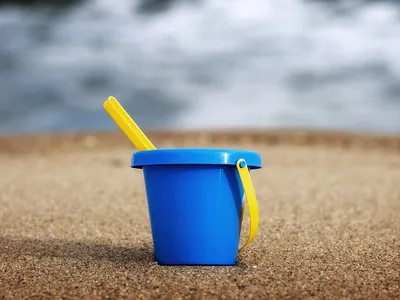

Ausrüstung für die Küste
Für Seevögel, Robben und Wale brauchst du vor allem ein gutes Fernglas und etwas Geduld. Für Strandfunde reichen offene Augen und ein Gang am Spülsaum nach dem Sturm. Diese Dinge machen beides leichter.
Vögel, Robben und Wale beobachten
- Beispielfoto · Foto: Jacek Halicki, CC BY-SA 4.0

Celestron Nature DX 8x42
Celestron
Für Seevögel im Watt und Robben auf der Sandbank, aus sicherem Abstand. 8-fache Vergrößerung, wasserdicht und leicht.
Bei Amazon ansehen Celestron Nature DX 8x42 (Werbelink, öffnet in neuem Fenster) - Beispielfoto · Foto: USFWS Mountain-Prairie, gemeinfrei

Unser TippVogelführer für Küste und Meer
Auswahl bei Amazon
Möwen, Watvögel und Seeschwalben ähneln sich oft. Ein Vogelführer mit Bildern der Jugend- und Winterkleider hilft beim Bestimmen.
Bei Amazon ansehen Vogelführer für Küste und Meer (Werbelink, öffnet in neuem Fenster) - Beispielfoto · Foto: Camper2, CC BY-SA 4.0

Strandmuschel mit UV-Schutz
Auswahl bei Amazon
Schützt an windigen Tagen vor Sonne und Sand. Achte auf einfachen Aufbau und ein kleines Packmaß.
Bei Amazon ansehen Strandmuschel mit UV-Schutz (Werbelink, öffnet in neuem Fenster)
Strandfunde suchen und bestimmen
- Beispielfoto · Foto: Amber Bugs, CC BY-SA 4.0

Unser TippUV-Taschenlampe 365 nm
Auswahl bei Amazon
Bernstein leuchtet unter UV-Licht bläulich bis gelb und fällt so im Tangsaum sofort auf. Nicht in die Augen leuchten.
Bei Amazon ansehen UV-Taschenlampe 365 nm (Werbelink, öffnet in neuem Fenster) - Beispielfoto · Foto: R. Tucker Abbott, American Seashells (1954), gemeinfrei

Unser TippBestimmungsbuch Strand und Küste
Auswahl bei Amazon
Ein handliches Bestimmungsbuch für Muscheln, Schnecken, Quallen und Strandfunde an Nord- und Ostsee passt in jede Strandtasche.
Bei Amazon ansehen Bestimmungsbuch Strand und Küste (Werbelink, öffnet in neuem Fenster) -
Becherlupe
Auswahl bei Amazon
Krabbe, Garnele oder Seestachelbeere kurz in Meerwasser setzen und von allen Seiten vergrößert anschauen. Danach zurück ins Wasser.
Bei Amazon ansehen Becherlupe (Werbelink, öffnet in neuem Fenster) - Beispielfoto · Foto: Andrea Michelbach, CC BY-SA 3.0

Sortierbox für Muscheln und Steine
Auswahl bei Amazon
Mit vielen kleinen Fächern, damit zerbrechliche Funde wie Herzigel und Plattmuscheln heil nach Hause kommen.
Bei Amazon ansehen Sortierbox für Muscheln und Steine (Werbelink, öffnet in neuem Fenster)
Watt und Kinder
- Beispielfoto · Foto: Mattes, CC BY 2.0 de

Wattschuhe
Auswahl bei Amazon
Schützen im Watt vor scharfen Austern, Seepocken und Muschelschalen und sitzen auch im Schlick fest am Fuß.
Bei Amazon ansehen Wattschuhe (Werbelink, öffnet in neuem Fenster) - Beispielfoto · Foto: Huangdan2060, CC BY 3.0

Kescher mit Teleskopstiel
Auswahl bei Amazon
Für Garnelen und kleine Krebse im Priel. Ein feines Netz schont die Tiere.
Bei Amazon ansehen Kescher mit Teleskopstiel (Werbelink, öffnet in neuem Fenster) - Beispielfoto · Foto: David, CC BY 2.0

Eimer-Set für Strandforscher
Auswahl bei Amazon
Eimer, Schaufel und Sieb für Sandburgen und zum kurzen Anschauen von Strandfunden.
Bei Amazon ansehen Eimer-Set für Strandforscher (Werbelink, öffnet in neuem Fenster)
Werbelink: Wenn du über diesen Link etwas kaufst, erhält der Küstenkompass eine kleine Provision von Amazon. Für dich ändert sich am Preis nichts. Als Amazon-Partner verdiene ich an qualifizierten Verkäufen.
Welches Fernglas?
Für die Küste passt ein Fernglas mit 8- oder 10-facher Vergrößerung und 42 Millimetern Objektiv. Es ist hell genug für trübes Wetter und ruhig genug, um eine Robbe auf der Sandbank aus mehreren hundert Metern zu erkennen. Wasserdicht sollte es sein, denn Gischt und Regen gehören dazu.
Mit UV-Licht nach Bernstein suchen
Bernstein leuchtet unter ultraviolettem Licht mit 365 Nanometern bläulich bis gelblich. Am besten suchst du in der Dämmerung im frischen Tangsaum nach einem auflandigen Sturm. Leuchte nie in Augen und achte auf Lampen mit Filter, die kaum sichtbares Licht abgeben.
Tiere nur kurz anschauen
Krebse, Garnelen und Seestachelbeeren kannst du für ein paar Minuten in Meerwasser in einer Becherlupe beobachten. Stelle sie nicht in die Sonne und bringe sie danach genau dorthin zurück, wo du sie gefunden hast.